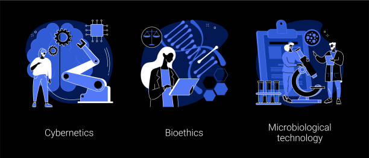

¿Que es la Bioética?

La bioética ees una disciplina que surge a mediados del siglo XX como respuesta al desarrollo
tecnocientifico sobre la vida. Su finalidad es elaborar un pensamiento fundamentado en la
ética, que responda a deliberaciones sustentadas en la razon, a fin de ofrecer criterios
éticos a la hora de tomar decisiones que afectan a la vida. Una de las primeras formulaciones
de la bioetica hace referencia al sentido mas global de la supervivencia de la humanidad
en la tierra, donde queda definida como un "llamamiento a la responsabilidad de preservar
el medio ambiente, la atmósfera y la biodiversidad".
Cuatro principios de la bioética :
Autonomia :
Capacidad de la persona para tomar desiciones de manera libre e independiente, que
debe respetarse siempre, salvo en excepciones en que entre el conflicto con otros
valores esenciales.
Beneficencia :
Maximizar los beneficios posibles y disminuir los posibles daños, siempre contando
con el parecer de la persona en su valoracion.
No maleficencia :
No hacer el mal intencionadamente(primum non nocere) o no incrementar con nuestra
actuacion el daño que ya sufre la persona.
Justicia :
Tratar casos iguales de forma igual para evitar al maximo las situaciones de desigualdad.
Problemas éticos actuales :
Existen varios problemas éticos actuales y desde siempre. Nombraremos algunos
de los que pueden ser muy importantes a tratar :
Ser libre.
Si nos preguntamos cuales son los principales problemas de la ética, sin duda
la libertad es el primero de ellos. De hecho la ética es el mejor ejemplo del
ejercicio de la libertad, ya que nos permite elegir el camino a seguir de acuerdo
a nuestros propios principios , o como decia platon, "el hombre de forma natural
siempre se inclinara hacia el bien". Aunque la libertad tambien proviene del conocimiento,
es necesario cuestionarse cualquier cosa, cualquier "verdad" que nos han enseñado
de generación en generación.
Perdon.
El perdon a través de indultos o amnistias es uno de los ejemplos de dilemas éticos
ms frecuentes. Se utilizan en pro de la reconciliación politíca, pero muchos argumentos
que estos beneficios juridicos pueden implicar impunidad, por lo cual conforma
una de las discusiones éticas importantes del siglo XXl
Afirmaciones y juicios.
En este sentido, la ética va mas alla del hecho de mentir o decir la verdad,
se refiere a sobretodo el daño que podemos causar a las personalescuando
hablamos igualmente, tambien este aspecto de la comunicación lleva implicita la
responsabilidad con la que debemos asumir qué decimos.
Individualismo.
Este es otro tipo de problema ético, se presenta como un fenómeno tipico de
las sociedades pos modernas donde priva el consumismo y falta de interes
por lo que sucede en nuestro enrotno, al otro. Los pensadores que analizan
a fondo este asunto concluye que el Individualismo inciden en la falta de democracia
de amor por el projimo, por la vida. Al tiempo que se atenta contra los derechos
humanos. Es necesario proyectar y practicar la solidaridad que es lo contrario
al individualismo.
Manipulación.
Existen diferentes formas de manipular a las personas, a las "masas", y el hecho
se evidencia en diferentes ejemplos, instancias, ya sea como forma de control social
o individual para vender un producto o servicio, o en las relaciones interpersonales y
familiares. Este es uno de los principales problemas éticos del mundo actual debido
a la influencia de este "sistema" en el que vivimos causando demasiados efecto negativos
para el alma. "Vivimos sin sentido solo dejandonos llevar por lo cotidiano, por lo que ya
estamos acostumbrados, no vemos ni sentimos mas alla, sabiendo que hay galaxias enteras
por descubrir no solo fisicamente , esperitual, cuantico, en especial con nosotros mismos."
Justicia.
La justicia es otro problema ético en la sociedad que más atención recibe en estos
tiempos que corren. Sobre todo se analiza si la justicia es realmente justa y al respecto
se menciona la famosa "formula de radbruch", la cual básicamente postula que cuando las leyes
son injustas, la justicia tambien lo es. Ojala existiera la verdadera justicia en este plano fisico
en este mundo. Mas allá realmente la hay de eso no podemos dudarlo. Por el momento
debemos influir , enseñar poner en practica justicia de verdad y transparente.
Verdad
La verdad es algo que cuadra con la realidad, la verdad nos hace libres aunque aveces
es relativa para cada uno de nosotros.
"La paz exige cuatro condiciones esenciales : VERDAD, justicia, amor, libertad".
Corrupción
El tema de corrupción es otro de los aspectos que más se analizan en la actualidad
y constituye el mejor ejemplo de qué son los problemas vistos desde la ética.
La corrupcion es un flagelo terrible que empobrece y destruye a sociedades, naciones enteras
y desestimula las inversiones. Se considera que la corrupción gubernamental
implica apropiarse de forma indebida de bienes que son del estado, por lo tanto
equivale a un robo, sin embargo los corruptos no lo ven asi, lo cual ha sido
demostrado a través de estudios.
Tambien existen mas problemas éticos como la bioética, humanismo ecologico, Inteligencia
Aritificial, Manipulación genetica, estos ultimos son un poco preocupante ya que podemos
llegar a un punto de "perder" nuestra "esencia humana" y empezar en el camino del
transhumanismo. No debemos olvidar que realmente somos y podemos llegar a ser, no perdamos
eso unico que nos hace verdaderos seres humanos.
En este espacio comparto algunos videos que tal vez les pueda gustar :

Kairos. Una historia de la bioética.
Etica actualizada."Jose ramon Ayllon"
"Un mundo feliz"
Analisis de Matrix
¿Se puede alterar la realidad? - Jacobo grinberg
Moral- El cerebro y yo